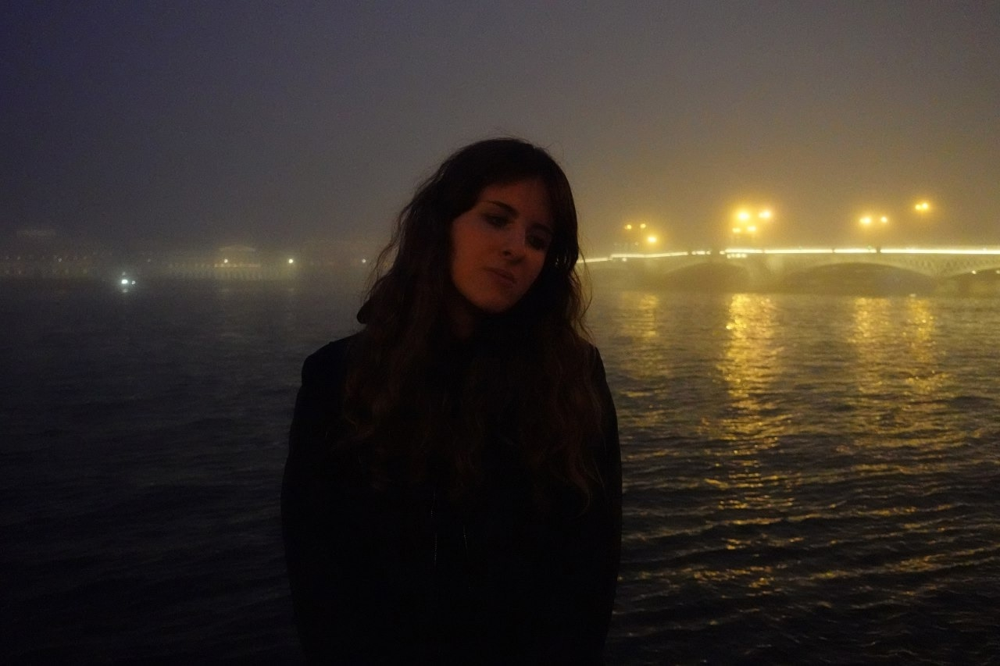

Я студентка НИУ ВШЭ. У меня много друзей и увлечений.
Этот сайт был создан, чтобы окружающие могли узнать что-нибудь новое обо мне.
Читать далее ↓На данный момент я живу на окраине Москвы.
Однако родилась я в Балашове и только спустя время переехала семьёй в столицу. Я обожаю Москву за её красивую архитектуру и дружелюбную атмосферу.
Читать далее↓Я закончила 11 классов в ГБОУ "Школа Перспектива".
Именно там зародилась моя любовь к изучению иностранных языков, из-за которой я поступила на ФиКЛ.
В школе я активно участвовала в различных мероприятиях, занималась творческими предметами, информатикой, математикой и, конечно же, английским языком.
Читать далее ↓В свободное время я часто рисую портреты по фото.
Я обожаю всё, что связано с музыкой и знаю много исполнителей.
Порой я играю в игры для ПК. Особенно мне нравятся визуальные новеллы.
Здесь можно узнать больше о моих музыкальных вкусах. Вот несколько исполнителей и групп, концерты которых я посещала.
↑ Наверх